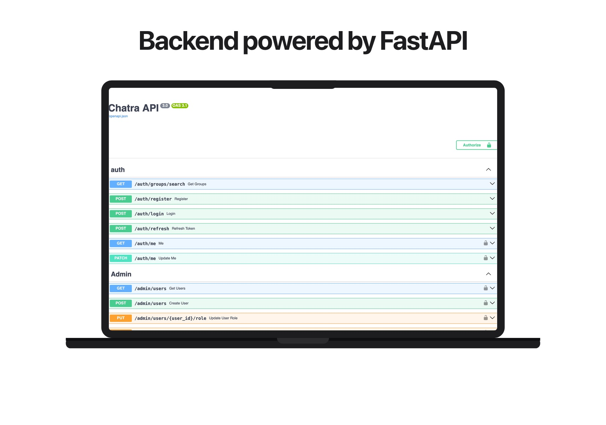

Chatra
Role-aware classrooms, assignments, chat, study tools, and administration across a Nuxt web client, Flutter mobile app, and FastAPI service.
Work index
A collection of shipped interfaces, connected product systems, and learning experiments. Use the filters to follow the kind of work you care about.
Role-aware classrooms, assignments, chat, study tools, and administration across a Nuxt web client, Flutter mobile app, and FastAPI service.

A calm family practice platform with AAC, parent guidance, and deterministic next-step planning.

Programme discovery, applications, schedules, materials, and role-based administration.

A dark, responsive decision interface for contract, on-chain, social, and holder risk signals.
A working Nuxt and FastAPI platform that turns an unstructured business problem into a reviewable task pack with explicit acceptance criteria.

A mobile product concept for separating income, tax reserve, expenses, project payments, and safe-to-spend money.

A Flutter client for the same classroom, authentication, messaging, and learning workflows.

FastAPI services for roles, classes, assignments, files, moderation, and authenticated client workflows.

A buildless multi-page interface system with progressive enhancement, responsive motion, accessible navigation, and theme support.

Programming fundamentals in Python alongside a public archive of HTML, CSS, layout, and interaction exercises.
No projects match this filter.
Have a product to shape?
I’m open to frontend roles, product collaborations, and focused interface work.
Let’s talk